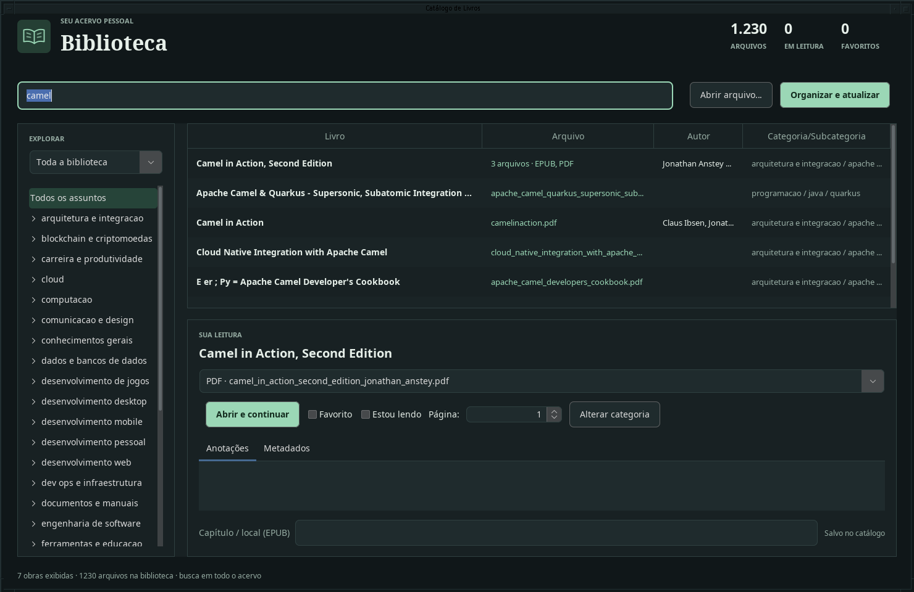

Da estante para o catálogo
Pesquise pelo ISBN para preencher dados e capa dos livros físicos. Revise e salve quando estiver pronto.
UM LUGAR PARA CADA LIVRO
Da estante ao PDF. Organize seus livros, encontre o que procura e continue de onde parou.
Escolha seu downloadFísicos + digitaisUm catálogo para todo o acervo
Sem criar contaSua biblioteca fica no computador
Windows · Linux · macOSJava incluído no instalador
Um aplicativo para reunir os livros que você tem, os arquivos que guarda e as leituras que quer retomar.

Pesquise pelo ISBN para preencher dados e capa dos livros físicos. Revise e salve quando estiver pronto.
Classificação automática, categorias em árvore e espaço para personalizar a organização do seu acervo.
Leitor de PDF integrado, favoritos, progresso e anotações. A localização dos arquivos digitais fica à vista.
Pesquise também por autor, editora, assunto e anotações. Consulte a biblioteca local mesmo sem internet.
Veja o que você ganha e o que considerar antes de começar.
COMECE PELA SUA PRÓXIMA LEITURA
Escolha a versão para o seu computador e comece a organizar o que você já tem.
Instalador MSI
Buscando última versão…
Carregando downloadInstalador pessoal .run
Buscando última versão…
Carregando downloadImagem de instalação DMG
Buscando última versão…
Carregando downloadConsultando os arquivos publicados. O download é fornecido diretamente pelo GitHub.
Não. O catálogo e as anotações ficam no seu computador. A internet é usada para consultar dados bibliográficos e capas.
No Windows, abra o arquivo MSI. No macOS com Apple Silicon, abra o DMG e arraste o aplicativo para Aplicativos. No Linux, dê permissão de execução ao arquivo .run e execute-o; o pacote .deb também está disponível.
chmod +x catalogo-livros-*-linux-x86_64.run
./catalogo-livros-VERSAO-linux-x86_64.runTroque VERSAO pelo número do arquivo baixado. Os pacotes não possuem assinatura de distribuição; o sistema pode solicitar uma confirmação de segurança.
Não. O aplicativo organiza seus próprios livros e documentos. A biblioteca exibida na imagem não acompanha o instalador.
Por padrão, a biblioteca fica em Desktop/Livros, dentro da sua pasta de usuário. O banco catalogo.sqlite fica nessa pasta. Guarde uma cópia dos arquivos e do banco ao fazer backup.
A soma dos downloads dos instaladores e pacotes portáteis de todas as releases estáveis, conforme os dados do GitHub. Uma pessoa pode baixar mais de um arquivo; o número não representa usuários únicos. Os dados são atualizados periodicamente.